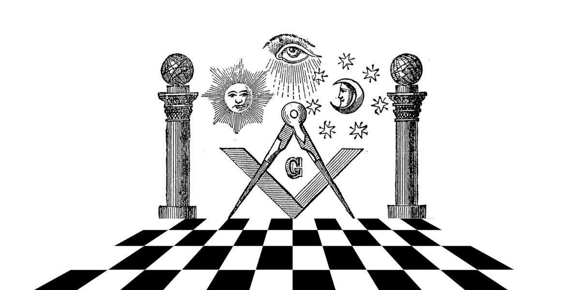

Maçonaria Universal  A Maçonaria, melhor denominada como Franco-Maçonaria chega a um ponto de patrimônio imaterial da humanidade. Ainda mais ao lembrarmos das ligações históricas entre a Maçonaria moderna e as Corporações de Ofício de pedreiros e arquitetos na Idade Média. E se investigarmos mais a fundo as tradições dos maçons operários, camos buscar raízes mais profundas remontam à antiguidade da civilização humana. Maçonaria é o termo em português e deriva dos termos: “Mason” (inglês) e “Maçon” (francês), cuja tradução significa “Pedreiro”. Tais palavras, estão diretamente ligadas ao ofício do cantel, designado em alemão por “metz”, ou seja, “cortador de pedra”, atividade dos maçons operativos de cortar determinado tipo de pedra e esquadreja-la, tendo em vista torna-la cubica e perfeita, para o uso em construções (CASTELLANI, 2007; FIGUEIREDO, 2011). É consenso dentre os historiadores da Ordem, que a Maçonaria é filha das primeiras associações de construtores, como: os Collegia Fabrorum do Século VI a.C., que eram colégios de arquitetos fundados, a partir do governo romano do Imperador Numa Pompílio; as Guildas e a organização dos Ofícios Francos do Século XII d.C. na França e Inglaterra; e no mesmo século na Alemanha, os Steinmetzen, cortadores e talhadores de pedra, que estiveram envolvidos na construção da Catedral de Estrasburgo. Desde as épocas mais remotas, quando os grupamentos sociais se fixaram e as primeiras civilizações se formaram, o oficio da construção se fez presente e foi aperfeiçoando. A Geometria e a Arquitetura, enquanto ciência, logo ganharam títulos nobres de "arte real e sacra", por serem apreciadas tanto pelos membros da nobreza, como pelo clero. Os antigos construtores tinham ofícios empregados em grandes templos, sepulcros, palácios, fortes, pontes e monumentos arquitetônicos de todas as ordens e dimensões. Atravessando séculos, a Maçonaria conseguiu alcançar a idade contemporânea, devido aos seus aspectos congregacional, fraterno e de mutuo auxilio entre seus membros. A transição entre o período antigo e operativo ao moderno e especulativo (filosófico), dado o encerramento da Idade Média em fins do Século XV e início do Século XVI, a Maçonaria seguiu evoluindo de simples corporação de ofício e confraria à ordem filosófica e escola de formação de livres-pensadores, o que resultou na propagação do sistema maçônico até os dias de hoje. No século XVI houve o início de um gradual declínio das atividades operativas, tendo em vista adensar o quadro das associações de Maçons ainda operativos, evitar o declínio e dar nova projeção às corporações na sociedade, passou-se a admitir insignes representantes da intelectualidade da época, mas estranhos ao ofício, que “serviram-se das associações organizadas de pedreiros-livres, tornando-se aceitos, para desenvolver a sua atividade cultural e social” (CASTELLANI, 2007). A Maçonaria demonstrou assim, sem uso da força ou de dogmas, uma capacidade de acomodação de distintas escolas de pensamento filosófico, científico, religioso e político. Qualidade essa, digna do interesse e atração de homens dotados de espirito liberal e das mais diversas classes, credos e profissões, inclusive personalidades marcantes da história. Uma vez que em suas filas existiam pessoas influentes, certo nível de proteção começou a ser agregada. Assim, preceitos como a liberdade de manifestação do pensamento e de abordagem da universalidade de novos conhecimentos advindos no Iluminismo, em contraponto ao dogmatismo religioso, foram razões para intelectuais. ESses grandes pensadores colocariam a Maçonaria como protagonista de movimentos de reforma social e de libertação humana ao longo do Século XVIII (intitulado “século das Luzes”) e do Século XIX (“século das grandes revoluções científicas”). Filósofos, cientistas, rosa-cruzes, renomados políticos, nobres, burgueses, militares, líderes de movimentos de reforma e libertação social, logo viriam solicitar sua iniciação no seletivo círculo de convivência das Lojas maçônicas, onde encontrariam terreno para o debate e disseminação dos seus ideais progressistas. Esse atrativo que a Maçonaria emanou se deve ao conteúdo e poder dos ritos cerimoniais, simbólicos e que oferecem maior compreensão apenas por aqueles que vivenciam regularmente a Ordem. Defini-la de maneira definitiva é impossível, sob pena de de cairmos em reducionismos e simplificações exageradas. Por conta da antiguidade e perseguições ora sofridas, sob pena de morte para seus integrantes, muita doucmentação se perdeu ou mesmo nem sequer chegou a ser produzida. Evidência dessas possibilidades é a existência de inúmeros ritos e rituais dos mais diversos matizes litúrgicos, que sistematizam e transmitem os princípios e propósitos maçônicos, através de uma espécie de linguagem global, regular, emblemática, universalmente aceita e assimilada entre os maçons modernos. Toda a cultura de sociabilidade, tradições e símbolos das antigas corporações de oficio, foi sistemática e progressivamente adaptada a uma perspectiva estritamente filosófica, espiritualista, de aplicabilidade moral e política, com o ingresso dos “Aceitos”.